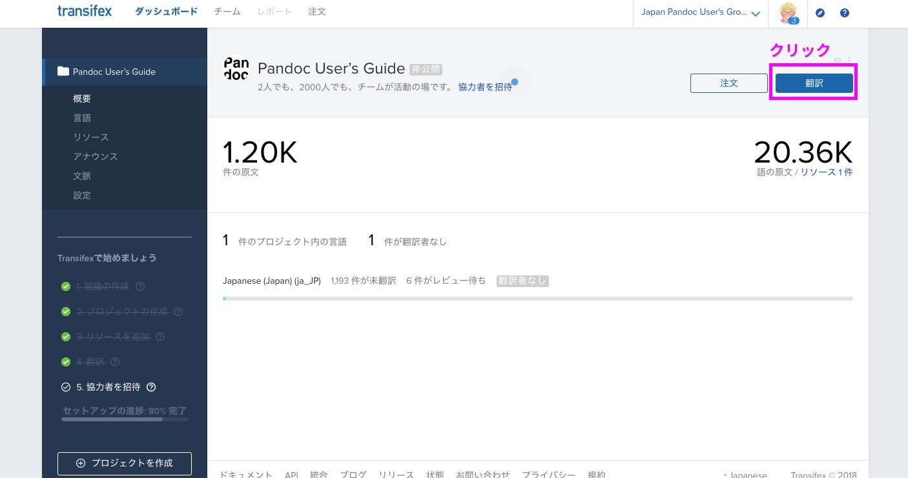
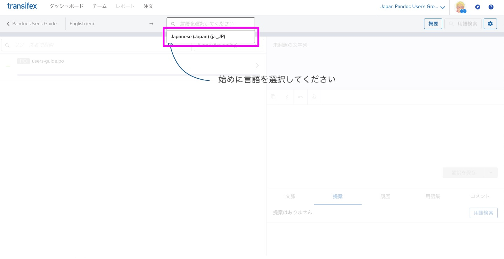
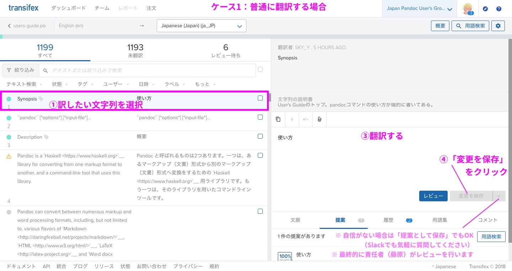
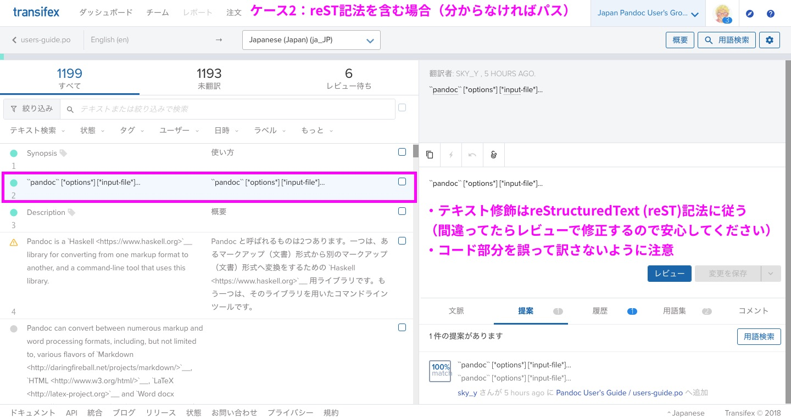

翻訳の手引 for Pandocユーザーズガイド¶
※ 順次書いていきます。
Pandocユーザーズガイドの翻訳作業に参加される方向けに説明します。
前提¶
reStructuredText (reST) という、Markdownよりも高機能な記法を使います
- 詳しくは 早わかり reStructuredText を参考にしてください
- なぜ？→ Sphinx というドキュメントビルダーの機能をフルに使いたいので（特に翻訳関係）
実際には Transifex というWebアプリを使って、翻訳作業を進めていただきます
参加方法¶
Pandocユーザーズガイド日本語版 翻訳ボランティア 登録フォーム よりご参加ください。
管理者（藤原）が下記に登録します。
Transifex（翻訳用のWebアプリ）
- 初めての方は、招待後に送られるリンクから、Transifexのアカウントを作成してください
Pandocユーザ会 Slack
作業手順¶
Transifexのトップ（「翻訳」を選ぶ）¶
Transifexの開始時（言語を選ぶ）¶
ケース1: 普通に翻訳する場合¶
- 左側：訳したい文字列を選択（自分が訳せそうなもののみでOKです）
- 右上：原文（英語）の文字列が出ているのを確認
- 右下：訳文（日本語）の文字列を入力
- 「変更を保存」をクリック（自信がない場合は「提案として保存」でもOK）
- 1に戻る。 適当なところで切り上げる （キリがないので）
※ 最終的に責任者（藤原）がレビューします
原文の Pandoc User’s Guide もあわせて確認してください
- 文脈がよくわからなくなるので（余裕があれば、Transifexの「文脈」にメモを残してくれると嬉しいです）
よくわからないテキストは放置してください。
訳したいけどわからない場合は、Slack
#users-guide-transで質問してください。
ケース2: reST記法を含む場合¶
reST記法を含む場合は、 元のreST記法（特にリンク）を崩さないようにしてください
- リンク（`リンク文字列 <URL>`_ など、いくつか種類がある）
- コード（バッククォート2つで囲む）
- 見出し（見出しの次の行に
=または-をたくさん並べる。Transifexの文字列には現れないので注意） - 太字、リストは大体同じ（ただしリストの入れ子は空行必須）
- 詳しくは: 早わかり reStructuredText
- その他、よくわからない記号は基本的にいじらないようにしてください（レビューで修正します）
Q&A¶
Q: Issueを見つけた。どうしたらいい？
Issues · pandoc-jp/pandoc-doc-ja にまとめています。 必要であれば、Issueを追加してください。また、過去のIssueも少しあるので参考にしてください。
お礼について¶
金銭的なお礼はありません。 あらかじめご了承ください。
翻訳・レビューにおいて貢献実績が確認された方には、お名前・Twitter ID・リンクなど（あれば）をサイトに掲載するようにします。 （掲載時にお伺いします。「掲載しない」でも可能です）